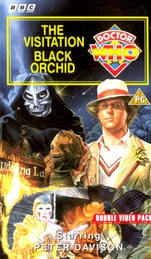
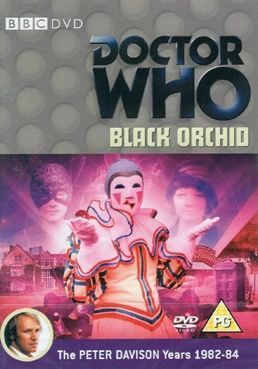
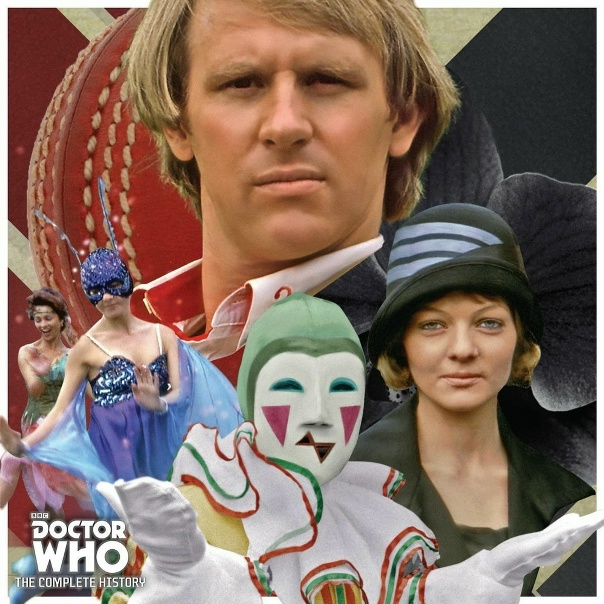

Эра Пятого Доктора (19 сезон)
<<< НАЗАД ||| 5. Чёрная орхидея ||| ДАЛЬШЕ >>>
Субтитры: Русские и Английские |  |
|---|---|
+ Расширенная версия (эпизод 1) * с озвучкой fm646 на расширенные места Субтитры: Русские и Английские | |
с обновлением визуальных эффектов (cunningmunki) * с озвучкой fm646 на расширенные места Субтитры: отсутствуют | |
Black Orchid
Дата выхода: 1-2 марта 1982
Формат: 2 эпизода по 25 мин.
 |  |  |
ТАРДИС приземляется в Англии 1925 года, и Доктора по ошибке принимают за приглашённого игрока в крикет. Матч проходит отлично, и лорд Крэнли зовёт путешественников на костюмированный бал. Но в поместье происходит убийство, и Доктор оказывается главным подозреваемым. Первая чисто историческая серия со времён «Горцев» — ни одного фантастического элемента, кроме ТАРДИС и её экипажа. Сара Саттон сыграла двойную роль — Ниссу и её точную копию Энн Тэлбот. А Питер Дэвисон, страстный крикетист в жизни, наконец-то получил оправдание своему костюму. Сценарист Теренс Дадли писал эту историю как обычный детектив, не прошёл — полежал в столе, а потом был адаптирован под «Доктора Кто». Рабочее название — «Зверь».
 VHS - июль 1994 |  DVD - 14 апреля 2008 |  Blu-ray (обновленный сезон) - 10 декабря 2018 * Версия в нашей группе |
|---|



Трейлер: